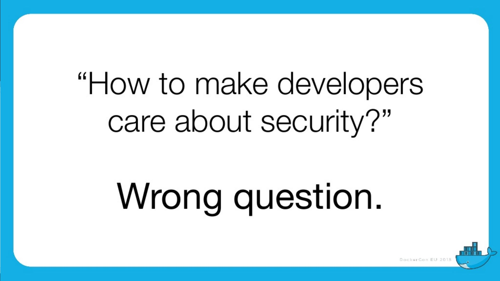
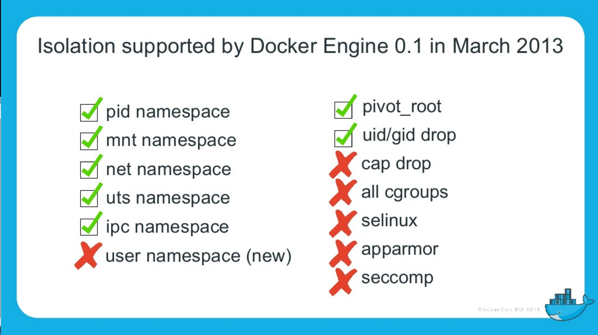

What is this "Docker" ?
Jean-Marc Meessen
I had a dream !
My own copy of the database
My own test environment
...And it became true !
Hello !
Jean-Marc MEESSEN
Brussels, Belgium
"Brol" engineer
Senior ESB Java Developer
Development Infrastructure Expert
Mentor
And you ?
Developers ?
Ops ?
Security ?
Managers ?
You and Docker ?
Never heard about it ?
Some "Proof of Concept" ?
Use it every day ?
In Production ?
Today’s talk
What are "containers" ?
How to start ?
Where is Docker heading ?
What are "containers" ?

Docker Containers are :
Isolated namespace (process, users, network, cgroups, etc)
Lightweight "virtualized servers"
A new artifact paradigm

Applications packaged with system dependencies
one application works on Ubuntu with Python 2
second application works on Centos 7.2 with Python 3
Execution mode
Container can run and then exit
Container can in background (daemon)
Demo
What Docker solves
Escape the dependencies hell
Fast iterative Infrastructure improvement
Container "loader" & Container "shipper"
(no more "it worked in Dev, now it’s OPS problem")
easy onboarding of Devs.
"Own test environment"
How to start ?
Need a container enabled "Kernel"
Linux or Windows 10 (beta)
Install the Docker "daemon"
Docker client
Run, stop, halt container
Remove stopped container
Examine logs
etc.
And for Windows or Mac OS X ?
Install a virtual machine (ex VirtualBox)
Ready made bundles:
Docker Toolbox
New, better integrated, clients
Using (corporate) proxies: advanced topic
Then you need images
Note: an image is immutable
you get them from
DockerHub
Corporate Registry
Or build it yourself
Building a Docker Image
Described in a Dockerfile
FROM ubuntu
MAINTAINER Kimbro Staken
RUN apt-get install -y software-properties-common python
RUN add-apt-repository ppa:chris-lea/node.js
RUN echo "deb http://us.archive.ubuntu.com/ubuntu/ precise universe" >> /etc/apt/sources.list
RUN apt-get update
RUN apt-get install -y nodejs
#RUN apt-get install -y nodejs=0.6.12~dfsg1-1ubuntu1
RUN mkdir /var/www
ADD app.js /var/www/app.js
CMD ["/usr/bin/node", "/var/www/app.js"]Describe a complete Infrastructure
Complex systems
Fuse ESB server
MQ series servers
Oracle database
Use "docker-compose"
docker-compose
one place to define
your components
how to (docker) build them
what container should start first
networks (who can talk to whom)
(data) volumes
Security restrictions
Etc.
"Build, Ship and Run"
Where is Docker heading ?
Docker Inc.
Docker has been surprised by this techno "flare"
Very, very lively Open Source community
"Batteries included"
Standardization (RunC, etc.)
Well grounded approach
Coming from the hosting world

Status
Was good for development and integration
Start to be usable for Real Life Run
Since December 2015
Status
Start to offer enterprise level solutions
"Docker Datacenter"
Trusted Registry (Image scanning, sig/auth)
Docker Universal Control Plane
Docker Cloud
Docker in production ?
This is, in general, the reaction…
The problem
Docker’s popularity reflects the quest for less and less friction.
Its ease of use leads to compromises and to neglect verification.
And yet Security is important.
And why ?
Our customers entrust us their systems / their data.
No sanctions for failing Companies
security is only seen as a cost
no "polluter pays" principle
I believe that we have a moral responsibility to remind our managers of the good (security) practices.
the situation with Docker
Reminder
What is he looking for?

What is he looking for?
(user) Data
Access other systems
Privilege elevation

What are the dangers with Docker?
Kernel exploits
Denial of service attack
Container breakout
Poisoned images
Compromising Secrets
Is Docker "secure" ?
A lot of expectations, of illusions
"Silver bullet"
Competition positioning (VM, Configuration Mgt)
Enviousness
Docker, Inc and security
Security (= operability) is one of their fundamental preoccupation
Aware of the youth of the technology
Very reactive
Positive attitude in the approach



"Container do not contain !"
Wrong perception by the "public"
Tremendous progress in 3 years
but usable…



In particular
Cap drop
User namespace
selinux / apparmor
Capability Drop
options to the "Docker run"
goes beyond the root/non-root dichotomy
example: container with NTP
docker run --cap-drop ALL --cap-add SYS_TIME ntpdUser namespace
Without User namespace
With User namespace
Selinux / apparmor
profiles are called at each "Docker run"
Allow to go much further in the granularity
this program (ex ping) has no access to the network
#include <tunables/global>
profile docker-default flags=(attach_disconnected,mediate_deleted) {
#include <abstractions/base>
network,
capability,
file,
umount,
deny @{PROC}/{*,**^[0-9*],sys/kernel/shm*} wkx,
deny @{PROC}/sysrq-trigger rwklx,
deny mount,
deny /sys/[^f]*/** wklx,
deny /sys/f[^s]*/** wklx,
deny /sys/fs/[^c]*/** wklx,
deny /sys/fs/c[^g]*/** wklx,
}"Clean" containers?
Malicious contents
Contains vulnerabilities or bugged applications
Trusted Registry
Systematic use of TLS
Re-enforcement of the layers integrity
Upgraded with version 1.10
Notary
System of image signature and its validation
Validation of the author and content non alteration
Protection Against Image Forgery
Protection Against Replay Attacks
Protection Against Key Compromise
Clever usage of physical key storage
Yubikey 4

Nautilus
(now called "Docker Security Scanning")
Docker image scanner
vulnerabilities (CVE check)
Licence validation
Image Optimisation
Simplified functional tests
Docker Inc’s strategy
Secure Platform
Secure Content
Secure Access
Secure Platform
Secure Platform
All available isolation containment
Default security settings and profiles
Docker Bench
Secure Content
Secure Content
Docker Content Trust
Security Scanning
Secure Access
Secure Access
Role Based Access control
AD/LDAP integration
Authentication plugins
Recommendations
Recommendations
Keep your host/images up-to-date
"Bulkheading"
Seperate disk partition for Docker
Don’t run other (non-Docker) applications on the same host
Container in a VM ?
Limit inter-container communications
log/audit trails
Access control
Recommendations
Do not use "priviliged" if it is not necessary
Applicative users in the containers
Where are my images coming from ? are they up-to-date ?
Access rights on the files
Conclusions
"Is Docker 'secure' ?"
No more or less then the door of an apartment
Security is everyone’s business : DevOps + SecOps
Thank You !
Contact info

Twitter: @jm_meessen